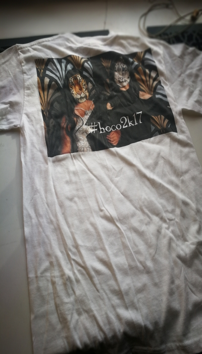

I photoshopped my homecoming picture and print it on a t-shirt.
I overlapped the cheetah heads to the human faces, I changed the opacity so that I can see the edge of the faces and used the magic brush to brush the extra off.
It turns off to be pretty cool, but my friend Kitty who took this pic with me thinks it's really ugly.
Guess I'm not gonna print another one for her.

For dye sublimation project, I decided to photoshop characters from two of my favorite computer games: Player's Unkown Battleground and Plants vs. Zombie
I want my puzzle to be like: the player tried to shoot other players with his Kar98k and 8x scope, however, he does not notice that he has been besieged by zombies that are fully armed.
So I put many zombies on the background. Sawgrass 800 printer printed the photo on piece of paper which I taped with the puzzle later, and pressed them for 60 seconds.
The only disatisfaction is that I should've made the picture with higher contrast so that the characters on the puzzle can be seen better.